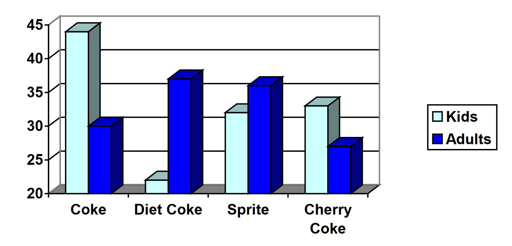

A group of adults were asked how many children they have in their families. The bar graph shows the number of adults who indicated each number of children.
Figure7.4.3.Image Credit: RRCC
How many adults were questioned?
What percentage of the adults questioned had 0 children?
Jasmine was interested in how many days it would take an order from an online store to arrive at her door. The graph below shows the data she collected.
The bar graph below shows the percentage of students who received each letter grade on their last English paper. The class contains 20 students. What number of students earned an A on their paper?
Kori categorized her spending for this month into four categories: Rent, Food, Fun, and Other. The percents she spent in each category are pictured here. If she spent a total of $2600 this month, how much did she spend on rent?
A rec center counted the number of people using the center once every hour on Sundays to decide if it should reduce its hours. The results they obtained are summarized in the graph below.
Figure7.4.7.Image Credit: RRCC
What was the smallest number of visitors in the rec center and how many times did it occur?
For how many hours were visitors counted?
For what percent of the hours counted were there fewer than 5 visitors in the rec center?
If you were deciding whether to reduce hours on Sundays would you want any additional information?
The test scores in a history class had a mean of 76% with a standard deviation of 4%. If an A is given to anyone with a test score 2 standard deviations above the mean, what is the cutoff score to earn an A?
A manager of a human resources department is investigating the number of sick days employees took during the last year. For employees in marketing, the average number of sick days was 4.5 with a standard deviation of 2. For those in accounting the mean number of sick days was 5.8 with a standard deviation of 3. Compute and compare the coefficients of variation for each set of data.
The CV for Marketing sick days is 0.44 and for Accounting sick days is 0.52. This means there was slightly more variablility in the number of sick days that those in accounting took.
21.
Ellen’s average commute time is 30 minutes with a standard deviation of 8 minutes. Zac’s commute takes an average of 45 minutes with a standard deviation of 10 minutes. Whose commute has more consistent times?
Zac's commute times are more consistent. (The coefficent of variation is 0.22 for Zac and 0.27 for Ellen.)
22.
Studies are often done by pharmaceutical companies to determine the effectiveness of a treatment program. Suppose that a new AIDS antibody drug is currently under study. It is given to patients once the AIDS symptoms have revealed themselves. Of interest is the average length of time in months patients live once starting the treatment. Two researchers each follow a different set of 40 AIDS patients from the start of treatment until their deaths. The following data (in months) are collected.
A graph appears below showing the number of adults and children who prefer each type of soda. There were 130 adults and kids surveyed. Discuss some ways in which the graph below could be improved.

24.
Make up three data sets with 5 numbers each that have: